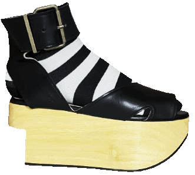
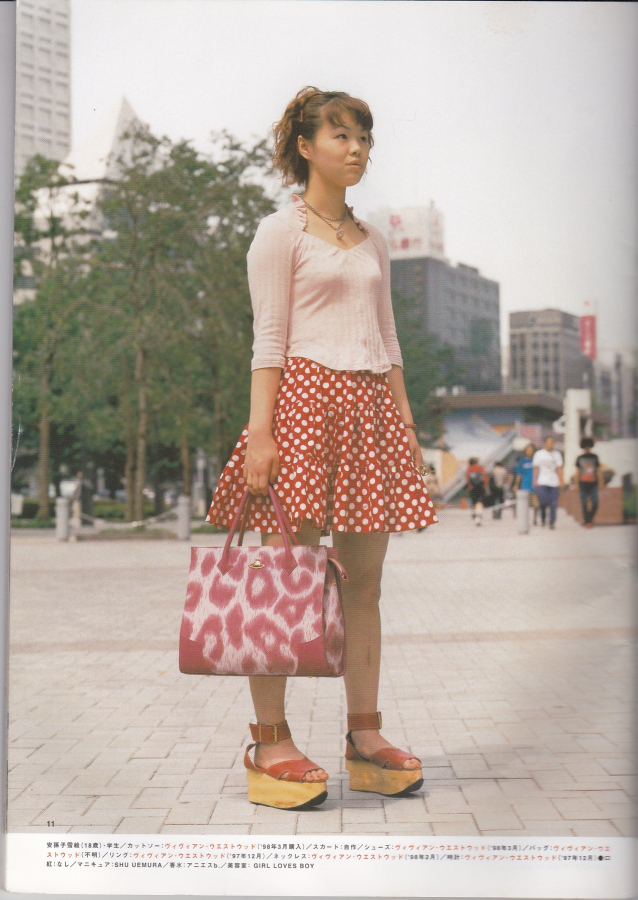
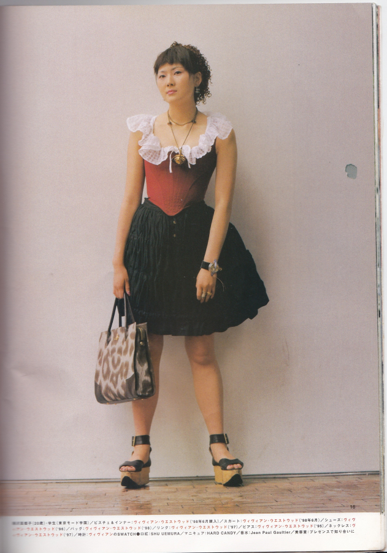
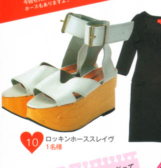

Rocking Horse Pagan Sandals
2025.01.05

i decided the pagan sandal was my must-have, a reorchestrated piece after the original rhs due to its brass buckle (given i wear a lot of metal). the base is made from real ayous wood and full-grain animal leather, which ages beautifully the more you wear it. it's sold at the world's end boutique in london.
out of the box the wooden wedge is pretty light-colored. you can usually achieve the butterscotch yellow seen in older pairs through treating the platforms with wax or varnish.
there aren't words for how grateful i am to finally be able to put this legendary work of art to use for what i hope to be decades while i'm doing my own thing.


